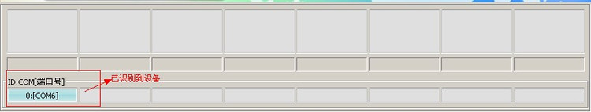
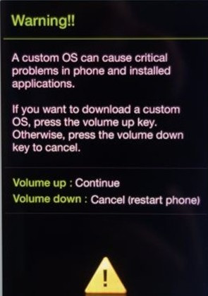
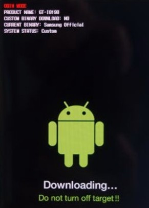
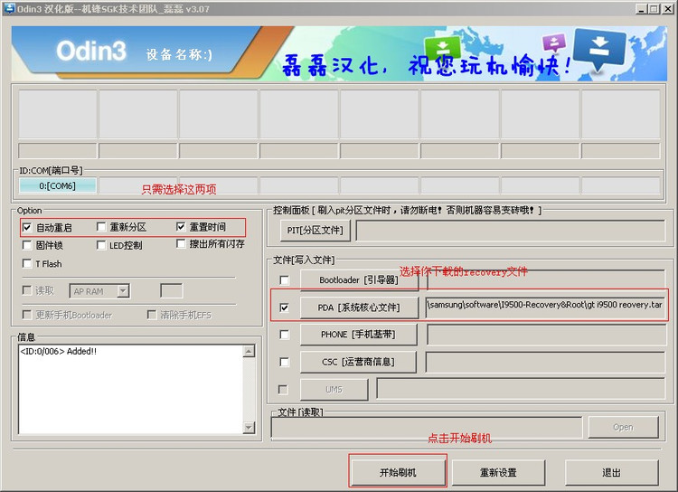
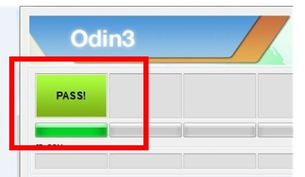
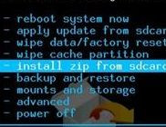

三星i9500移动网络不可用
手机提示“移动网络不可用”， IMEI 变成了0049…… 原因看了网上所说的是手机内核不识别基带，导致网络注册不了。解决办法是刷回对应的基带就可以了。
第一步
刷recovery。引：recovery简单的翻译过来就是“恢复”的意思。是开机后通过特殊的组合按键(每个厂商手机以及各个型号不尽相同)能够进去的一个系统(工程模式)
- 下载samsung galaxy s4 I9500 的recovery，地址：http://pan.baidu.com/s/1cNZXx
- 下载 odin 工具，地址：http://pan.baidu.com/s/1MiNY
- 刷入recovery，具体步骤如下：
- 1 将手机连接电脑。如果无法连接，请下载驱动，地址：http://pan.baidu.com/s/1h7IQF
- 2 解压下载的odin，并运行odin。如果第一步手机能连接电脑，那么odin就能识别到你的手机，如图一。
 - 3 将手机关机，同时按住音量减小键（音量下键） Home键（屏幕下方中间的方块按键） 开机键，出现第一界面后再按音量增加键（音量上键）选择“continue”，进入刷机模式。如图二、图三。

 - 3 在odin中添加你下载的recovery，点击开始，等待刷机完成，如图四。
 - 4 如果成功，则出现图五中的“pass”字样，你的手机会重新启动。如果不成功可能是你的recovery不适应，请重新下载与你手机型号对应的recovery，再重新刷入即可。

第二步：进入recovery模式，刷基带。
1、 首先你要下载samsung galaxy s4的基带了，我的是港版的，地址：http://pan.baidu.com/s/1otuz6
2、 将下载的基带复制到你手机的sdcard上。
3、 将手机关机，同时按住音量减加键（音量上键） Home键（屏幕下方中间的方块按键） 开机键，进入刷机模式。如图六。

4、 按手机音量加减键进行选择，按开机键确定。选择“install zip from sdcard”项，按确定。再选择“choose zip from sdcard”项，按确定。选择存放在sdcard上的基带文件，按确定，开始刷基带。
5、 刷完基带后选择“go back”,最后选择“reboot system now”,重新启动你的手机。然后拨打一个号码看看，“移动网络不可用”问题顺利解决！